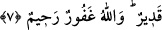

benim hükümranlığımdan hiçbir şey eksiltmiş olmaz.
Ey kullarım! Şâyet sizin öncekileriniz ve sonrakileriniz, insanlarınız ve cinleriniz
dümdüz bir alana toplanıp benden istekte bulunsanız da her birinize ayrı ayrı bütün
istek ve dileklerini versem, benim katımdaki hazinemden, ancak bir dikiş iğnesinin
atlas okyanusuna sokulup çıkarılması gibi hiç bir şey eksilmez.
Ey kullarım! Sizin yaptıklarınız amellerinizi ben kaydedip saklıyorum, onların
karşılığını size vereceğim. Kim iyilik bulursa, hayırla karşılaşırsa Allah’a hamdetsin,
bundan başka bir şey bulursa kendinden başkasını ayıplamasın.”[90]
Bu kudsi hadisteki, “yapmış olduğunuz ameller”e râci hiye zamirinin anlamı budur:
Yâni “amellerinizin karşılığı ancak benim katımda sizin için korunmaktadır, sonra onları
size fazlasıyla yetecek şekilde vereceğim.”
Âyet-i kerîme’de geçen el-Hamîd kelimesi mefûl mânâsına feîl veznindedir. İmam
Kuşeyrî (r.h.) bunun fâil mânâsına olduğunu kabul etmiştir. Yâni “O, kendi zâtını
övücüdür ve kullarından mü’min olanları da övücüdür” anlamına geldiğini söylemiştir.
Mişkât adlı eserin şârihi şöyle demiştir: el-Hamîd yüce isminden kulun nasibi, Allah
Teâlâ’nın yüce zâtına başka bir şey için değil yalnız hamdedip O’nun yakınlığını
kazanan kulların listesine alınmak için çalışmaktır.
Şeyh Ebu’l-Kasım (r.h.) şöyle demiştir: Allah’a şükür sayılacak ve O’na şükür için
yapılan hamd, mün’imi yâni nimeti vereni görmektir. Çünkü şükrün hakikati, nimeti
görmekten geçip nimeti vereni görmek üzere gaybete bürünmektir.
Rivâyete göre Dâvûd (a.s.) Allah’a yakarışında şöyle demişti: “Ya Rabbi! Sana
benim şükretmem bile yüce katından bana bir nimet olduğu halde sana hakkıyla nasıl
şükredeyim?” Bunun üzerine Allah Teâlâ ona vahyederek, “işte şimdi bana gerçekten
şükretmiş oldun ey Davud!” buyurdu.
İşâret ehli bâzı zevat şöyle demiştir: Allah’ın dostu İbrahim (a.s.)’ da ve
beraberindekilerde, onların duyularla algılanabilen hususlardan arındırılmış, akıl ve
misal hususlarından soyutlanmış rûhî bir takım kuvvetlere sâhib olmaları bakımından
güzel örnekler vardır. Bu da kavminden, yâni kötülüğü emreden nefsinden ve onun
uyulan hevâsından uzak olmaktır. O halde kim, ondan bu güzel örneği alır ve buna
devam edecek olursa arzu ettiği murâdına erer. Kim de, örnek almayıp yüz çevirirse,
şüphesiz ki Allah bu kişinin güzel örnek almasından müstağnidir, buna ihtiyacı yoktur.
Kulu O’nu övmese de Allah yüce zâtında övülmüştür.
7. Olur ki Allah sizinle düşman olduklarınız arasında yakında bir dostluk meydana
getirir. Allah gücü yetendir. Allah çok bağışlayan, çok esirgeyendir.